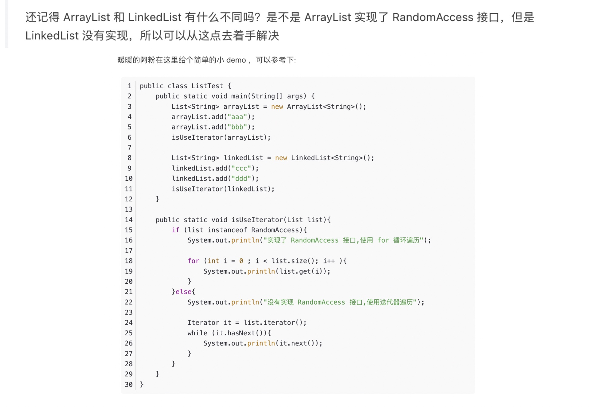

具体这次复习分为几个部分：
网上算法教程：
牛客网左程云亲自上场带你刷爆数据结构与算法-金九银十最新版！ https://www.bilibili.com/video/BV1N44y1C7Dq/
刷题技巧网站： https://labuladong.github.io/algo/2/20/23/ https://labuladong.github.io/algo/1/
设计模式： https://refactoringguru.cn/design-patterns/singleton
从心态上看，算法是一个套路和实践双结合的问题，就是套路要知道，练得要足够，手够热。
读面经，有助于快速吸收知识，补足不懂的地方，提问是引起检查知识缺陷和快速进入面试状态的一种方式
遇到一道题目的思考路径：
动态规划,深度优先搜索(dfs),广度优先搜索(bfs),排序,二分查找,双指针,栈,堆（优先队列）,回溯,递归,分治,单调栈,枚举,队列,状态压缩,记忆化搜索,哈希函数,单调队列,快速选择,桶排序,模拟,贪心
基础结构
//在写dp中经常遇到
int[] dp=new int[n];
//赋值一维数组
Arrays.fill(dp, -1);
int[] cnt1 = new int[26];
int[] cnt2 = new int[26];
for (int i = 0; i < n; ++i) {
++cnt1[s1.charAt(i) - 'a'];
++cnt2[s2.charAt(i) - 'a'];
}
// 判断两个arr相等
if (Arrays.equals(cnt1, cnt2)) {
return true;
}
链接：https://leetcode.cn/problems/permutation-in-string/solutions/599202/zi-fu-chuan-de-pai-lie-by-leetcode-solut-7k7u/
//赋值二维数组
int[][] dp=new int[m][n];
for(int i=0;i<m;i++){
Arrays.fill(dp[i]);
}
/**
* Definition for a binary tree node.
* public class TreeNode {
* int val;
* TreeNode left;
* TreeNode right;
* TreeNode(int x) { val = x; }
* }
*/
LinkedList<Integer> list=new LinkedList<>();
PriorityQueue<Integer> pq=new PriorityQueue<>((o1,o2)->{
return o2-o1;
});
for(Map.Entry<String,String> tmp:map.entrySet()){
System.out.println(tmp.getKey()+"->"+tmp.getValue());
}
for(String tmp:map.KeySet()){
System.out.println(tmp);
}
HashSet<String> set=new HashSet<>();
for(String tmp:set){
System.out.println(tmp);
}
table.foreach(
(key,value) - > {
System.out.println(key+" "+value);
}
Stack<Integer> stack=new Stack<>();
stack.push(a);
stack.pop();
stack.peek();
stack.size();
while(stack.isEmpty()){
}
HashMap<String, String> map=new HashMap<String,String>(){
{
put("key1","value1");
put("key2","value2");
}
};二进制 (toBinaryString)
int l = 10;
"Binary is " + Integer.toBinaryString(l)
int l = 10;
// returns the string representation of the unsigned int value
// represented by the argument in binary (base 2)
System.out.println("Binary is " + Integer.toBinaryString(l));
l = 9;
System.out.println("Binary is " + Integer.toBinaryString(l));
public static String toBinaryString(int num)
Parameter : The function accepts a single mandatory parameter num
num - This parameter specifies the number to be converted to binary string.
It is of int data-type
Return Value: This function returns the string representation of the unsigned Integer value represented by the argument in binary (base 2).
Examples:
Input : 10
Output : 1010
Input : 9
Output : 1001 数组， ====> OK
如何找到数组中的奇数节点，和偶数节点 i%2==0
给一个数组，实现奇数位置从大到小排列，偶数位置从小到大排列 （LinkedList, sort, 一个从removeFirst()，一个从removeLast()拿, 偶数节点 i%2==0 1 , 2，3，4
int[] a=new int[]{1,2,3,4};
int size=a.length;
List<Integer> list=Arrays.asList(a);
Arrays.sort(a);字符串， ====> OK
String ---> str.length();
str.substring(start,end);
int index=s1.charAt(i) - 'a'; // index to (0 to 26)
int[] count1 = new int[26]; // s1每个字符出现的次数
int[] count2 = new int[26]; // s2每个字符出现的次数
// 1. 进行统计
for (int i = 0; i < s1.length(); i++) {
count1[s1.charAt(i) - 'a']++;
count2[s2.charAt(i) - 'a']++;
}
原文链接：https://blog.csdn.net/afei__/article/details/85058158
public static void main(String args[]) {
String str = "I love shopee !";
ListNode curr=node;
for(Character tmp:str.toCharArray()) {
ListNode newNode=new ListNode();
newNode.value=tmp+"";
curr.next=newNode;
curr=curr.next;
}
ListNode returnNode=FindKthToTail(node,1);
System.out.println(returnNode.value);
}
String string1 = "foo bar";
String string2 = "foo bar";
// java string compare example
if (string1.compareTo(string2) == 0)
{
// this line WILL print
System.out.println("The two strings are the same.")
}Compares two strings lexicographically. The comparison is based on the Unicode value of each character in the strings.
说明： 如果第一个字符和参数的第一个字符不等，结束比较，返回第一个字符的ASCII码差值。 如果第一个字符和参数的第一个字符相等，则以第二个字符和参数的第二个字符做比较，以此类推,直至不等为止，返回该字符的ASCII码差值。 如果两个字符串不一样长，可对应字符又完全一样，则返回两个字符串的长度差值。
// Decode ways 里面compare字符串是否>="10",并且<="26"
if (i >= 2 && (s.substring(i - 2, i).compareTo("10") >= 0 && s.substring(i - 2, i).compareTo("26") <= 0)) {
dp[i] += dp[i - 2];
}
public int compareTo(String anotherString) {
byte v1[] = value;
byte v2[] = anotherString.value;
if (coder() == anotherString.coder()) {
return isLatin1() ? StringLatin1.compareTo(v1, v2)
: StringUTF16.compareTo(v1, v2);
}
return isLatin1() ? StringLatin1.compareToUTF16(v1, v2)
: StringUTF16.compareToLatin1(v1, v2);
}
// 另一种处理字符串的方法:
String str="27";
int ten = (str.charAt(0) - '0') * 10;
int one = (str.charAt(1) - '0');
System.out.println(ten+" "+one+" "+(ten+one));
if((ten+one)>26){
System.out.println(">26");
}
// output: 20 7 27
// output: >26矩阵，
int[][] a =new int[m][n];
链表 prev、cur、next
找到单链表第k个节点。
将链表逆转
拼接两个有序链表
删除单链表倒数第 n 个节点(里面有两种情况）
求单链表的中间节点(快慢指针）
快慢指针，有环没环
找到环的入口点（要理解证明过程）
求两个无环单链表的第一个相交点（第一个公共交点）
有环时查找入环点的方法的证明过程如下： 当fast与slow相遇时，slow还没走完链表，而fast已经在环内循环了n圈了，假设slow在相遇前走了s步，则fast走了2s步，设环长为r，有2s=s+nr，即s=nr. 由上图可知a+x=s, x+y=r，而我们的目标是找到a的位置。设上图那个拱起的曲线的长度为y，有a+x=s=nr=(n-1)r+r=(n-1)r+y+x，则a=(n-1)r+y. 这个公式告诉我们，从链表头和相遇点分别设一个指针，每次各走一步，这两个指针必定相遇，且相遇的第一个点为环入口点。
无环单链表是否相交判断有多种方法： 方法1：先循环链表1，将每个节点的地址进行hash计算存入哈希表，然后计算链表2的每个节点的地址的hash值，若与hash表中对应位置有值，则相交，否则不相交。 方法2：见链表1与2进行首尾相连，判断新链表是否有环，若没有，则不相交，若有环，则是相交的。 方法3：先计算两个链表的长度L1、L2，若L1 > L2，则先将链表1移动（L1 - L2）个节点，等到链表1和链表2剩下的长度一样的时候，一起向后移动，依次判断当前链表的节点是否相等，若相等，则相交，若到队尾还没有相等的，则不相交
链表经典题目： https://www.jianshu.com/p/a2d53142860c
LinkedList
LinkedList<String> list=new LinkedList<>();
list.removeFirst();
list.removeLast();
list.add(x); ==> list.addLast(x);
Iterator<String> it=list.iterator();
while(it.hasNext()){
System.out.println(it.next());
}
List<String> res = new LinkedList<>();
res.toArray(new String[0]); // 转array
res.remove(0); // 按位置删除
LinkedList<Integer> list = new LinkedList<>();
list.get(i);
list.set(i, newValue);
Iterator<String> it=list.iterator();
while(it.hasNext())[
System.out.println(it.next());
}
队列,
使用两个队列，做一个栈。(看queue1是空的话，就插入到queue2，然后将queue1的都装进来，弹出的时候，直接从有数据的那个queue直接弹出。这样就保证了后进先出。)

堆栈，
使用两针堆栈，模拟一个队列
倒序打印一个单链表
stack.peek();
stack.push(x);
stack.pop();
最小栈
有效的括号
二叉树，固定算法结构。
构建二叉树，根据先根和中根遍历，构造二叉树。(root.left=rebuildTree(preorder, inorder, start, mid-1), root.right=rebuildTree(preorder, inorder, mid+1, end); 构建二叉树，根据后根和中跟遍历，构造二叉树。 二叉树，输出其镜像（每个节点的左右子节点交换）==》 left.val==right.val && symm(left.left,right.right) && symm(left.right,right.left)
序列化和反序列化二叉树.
public void serializeHelper(TreeNode root, List
二叉搜索树
判断二叉搜索树的后根遍历序列。。（二叉树右子树的值一定大于root, 先找到第一个大于root的值，这个值是右子树的根mid index，然后分别verify(postorder, start, mid-1) && verify(postorder,mid,end-1))
排序，
快排。 Arrays.sort(a); Arrays.sort(a, (o1,o2)->{ return o1-o2; }); Collections.sort(b, (o1,o2)->{ return o1-o2; }); 桶排序
快慢指针 判断链表是否有环，环的入口在哪里
哈希表，
哈希表的结构
双指针，两指针问题，考察运用语言基本能力，灵活解题能力。
移动零
优先级队列， ====> OK
PriorityQueue
pq.add(x); pq.poll(); pq.peek();
O(nlogn)
桶排序, 首先，桶的最长长度是可以确定的，然后可以根据一定的规则把所有的值分桶（topK） ====> OK
排列
全排列 ===> DPS解法 全排列，但是不能有重复 ===> DPS解法+HashSet
回溯，
List<List<Integer>> res = new LinkedList<>();
// 记录回溯算法的递归路径
LinkedList<Integer> track = new LinkedList<>();
// 主函数
public List<List<Integer>> subsets(int[] nums) {
backtrack(nums, 0);
return res;
}
// 回溯算法核心函数，遍历子集问题的回溯树
void backtrack(int[] nums, int start) {
// 前序位置，每个节点的值都是一个子集
res.add(new LinkedList<>(track));
// 回溯算法标准框架
for (int i = start; i < nums.length; i++) {
// 做选择
track.addLast(nums[i]);
// 通过 start 参数控制树枝的遍历，避免产生重复的子集
backtrack(nums, i + 1);
// 撤销选择
track.removeLast();
}
}贪心，
枚举(穷举)，即通过for loop一定可以将问题分为一类，另一类：字符串轮转，一定可以通过穷举找到所有的情况
BFS，即通过固定模板，先广度再下一步。 腐烂的橘子
DFS, 即通过固定模板，先向下搜索到末尾，再回溯。 二叉树先根遍历 电话号码的字母组合
递归，
二叉树的递归
public void preOrderTraverse(TreeNode root) {
if (root != null) {
System.out.print(root.val + "->");
preOrderTraverse(root.left);
preOrderTraverse(root.right);
}
}非递归实现 二叉树先根遍历：
public void preOrderTraverse2(TreeNode root) {
Stack<TreeNode> stack = new Stack<>();
TreeNode node = root;
while (node != null || !stack.empty()) {
if (node != null) {
System.out.print(node.val + "->");
stack.push(node);
node = node.left;
} else {
TreeNode tem = stack.pop();
node = tem.right;
}
}
}binarySearch递归
public int binarySearch(int[] nums, int target, int left, int right){
if(left<0 || right>nums.length || left>right){
return -1; //结束条件
}
while(left<=right){
int mid=(left+right)/2;
if(nums[mid]==target){
return mid;
}else if(nums[mid]>target){
return binarySearch(nums,target,left, mid-1);
}else{
return binarySearch(nums,target,mid+1,right);
}
}
}递归回退：
int count = 1;
ListNode node;
public ListNode FindKthToTail(ListNode head,int k) {
if(head != null){
this.FindKthToTail(head.next,k);
if(count++ == k){
node = head;
}
}
return node;
}Two Sum BST(binary Search Tree)
public boolean findTarget(TreeNode root, int target){
HashSet<Integer> set=new HashSet<>();
return dfs(root,target,set);
}
public boolean dfs(TreeNode root, int target, HashSet<Integer> set){
if(root==null){
return false;
}
if(set.contains(target-root.val){
return true;
}
set.add(root.val);
return dfs(root.left, target, set) || dfs(root.right, target, set);
}DP-动态规划，动态规划
一个有名的理发师会收到源源不断的预约请求，每个预约都可以选择接或不接。在每次预约服务之间要有休息时间，因此她不能接受相邻的预约。给定一个预约请求序列，替理发师找到最优的预约集合（总预约时间最长），返回总的分钟数。
示例 1： 输入： [1,2,3,1] 输出： 4 解释： 选择 1 号预约和 3 号预约，总时长 = 1 + 3 = 4。
dp[i]=Math.max(dp[i-2]+nums[i], dp[i-1]);
根据上述思路，可以得到时间复杂度 O(n) 和空间复杂度 O(n) 的实现。考虑到每间房屋的最高总金额只和该房屋的前两间房屋的最高总金额相关，因此可以使用滚动数组，在每个时刻只需要存储前两间房屋的最高总金额，将空间复杂度降到 O (1).
打家劫舍 （每间房屋的最高总金额只和该房屋的前两间房屋的最高总金额相关） dp[i]=Math.max(dp[i-2]+nums[i], dp[i-1]);
可以使用滚动数组计算，把空间降低到1.
打家劫舍 II 思路2： 怎么就没想到把环形分成两个单排呢 (一个是去掉首，一个去掉尾)，然后比较这两个大小。
class Solution {
public int rob(int[] nums) {
int length = nums.length;
if (length == 1) {
return nums[0];
} else if (length == 2) {
return Math.max(nums[0], nums[1]);
}
return Math.max(robRange(nums, 0, length - 2), robRange(nums, 1, length - 1));
}
public int robRange(int[] nums, int start, int end) {
//滚动数组，每间房屋的最高总金额只和该房屋的前两间房屋的最高总金额相关
int first = nums[start], second = Math.max(nums[start], nums[start + 1]);
for (int i = start + 2; i <= end; i++) {
int temp = second;
second = Math.max(first + nums[i], second);
first = temp;
}
return second;
}
}
打家劫舍 三 （二叉树）

public int rob(TreeNode root) {
if (root == null) return 0;
int money = root.val;
if (root.left != null) {
money += (rob(root.left.left) + rob(root.left.right));
}
if (root.right != null) {
money += (rob(root.right.left) + rob(root.right.right));
}
return Math.max(money, rob(root.left) + rob(root.right));
}解法二、记忆化 - 解决重复子问题
针对解法一种速度太慢的问题，经过分析其实现，我们发现爷爷在计算自己能偷多少钱的时候，同时计算了 4 个孙子能偷多少钱，也计算了 2 个儿子能偷多少钱。这样在儿子当爷爷时，就会产生重复计算一遍孙子节点。
于是乎我们发现了一个动态规划的关键优化点
重复子问题
我们这一步针对重复子问题进行优化，我们在做斐波那契数列时，使用的优化方案是记忆化，但是之前的问题都是使用数组解决的，把每次计算的结果都存起来，下次如果再来计算，就从缓存中取，不再计算了，这样就保证每个数字只计算一次。 由于二叉树不适合拿数组当缓存，我们这次使用哈希表来存储结果，TreeNode 当做 key，能偷的钱当做 value
解法一加上记忆化优化后代码如下：
public int rob(TreeNode root) {
HashMap<TreeNode, Integer> memo = new HashMap<>();
return robInternal(root, memo);
}
public int robInternal(TreeNode root, HashMap<TreeNode, Integer> memo) {
if (root == null) return 0;
if (memo.containsKey(root)) return memo.get(root);
int money = root.val;
if (root.left != null) {
money += (robInternal(root.left.left, memo) + robInternal(root.left.right, memo));
}
if (root.right != null) {
money += (robInternal(root.right.left, memo) + robInternal(root.right.right, memo));
}
int result = Math.max(money, robInternal(root.left, memo) + robInternal(root.right, memo));
memo.put(root, result);
return result;
} 二分查找，
public int binarySearch(int[] arr, int target){
int left=0;
int right=arr.length-1;
while(left<=right){
int mid=(left+right)/2;
if(nums[mid]==target){
return mid;
}
if(nums[mid]>target){
right=mid-1;
}else{
left=mid+1;
}
}
return -1;
}快排，
堆排序， 如果所有上部节点大于其下部孩子节点，我们叫做大根堆。 如果所有上部节点小于其下部孩子节点，我们较多小根堆。
LRU
Snowflake id